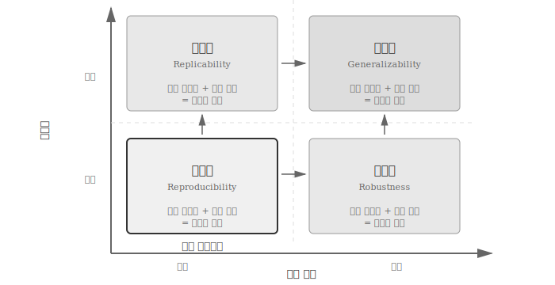
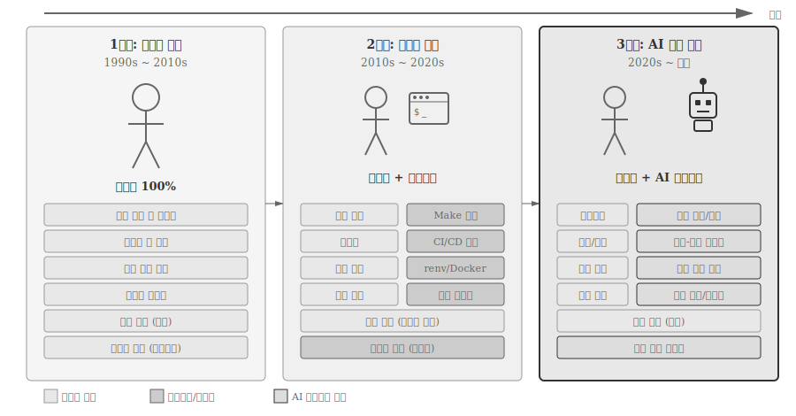
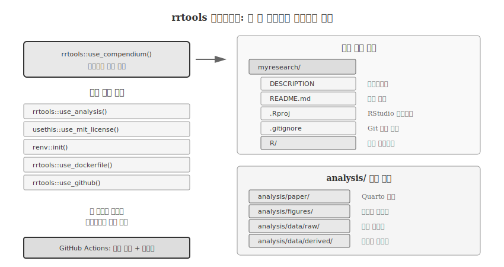

| FAIR | 원칙 | 컴펜디엄 적용 |
|---|---|---|
| Findable | 영구 식별자로 검색 가능 | GitHub + Zenodo DOI |
| Accessible | 표준 프로토콜로 접근 가능 | Git clone 무료 접근 |
| Interoperable | 표준 포맷으로 상호 호환 | 플레인 텍스트, CSV, JSON |
| Reusable | 명확한 라이선스로 재사용 가능 | MIT/CC-BY 라이선스 |
36 연구 컴펜디엄
2024년 한 연구팀의 사례다. Nature 자매지에 게재 승인을 받은 논문에 대해 심사위원이 “코드와 데이터를 공개해주세요”라고 요청했다. 연구자는 당황했다. 코드는 GitHub에 있지만, 10개 스크립트가 어떤 순서로 실행되는지 본인도 기억나지 않았다. 데이터 파일 20개 중 어떤 것이 원본이고 어떤 것이 중간 결과물인지 구분이 안 됐다. 패키지 버전은 기록해두지 않았다. 결국 논문 게재가 3개월 지연되었고, 연구자는 자신의 코드를 다시 이해하는 데 2주를 소비했다.
2016년 Nature 설문조사에서 연구자 70% 이상이 “다른 연구자의 실험을 재현하는 데 실패한 적이 있다”고 답했고, 50% 이상이 “자신의 실험조차 재현하지 못한 적이 있다”고 고백했다 [1]. 재현성 위기(reproducibility crisis)는 과학 전반에 걸친 구조적 문제다.
재현성 위기의 배경에는 의심스러운 연구 관행(questionable research practices)이 있다 [2]. 2012년 설문조사에 따르면 심리학자의 50% 이상이 이러한 관행을 경험했다고 보고했다. 대표적인 예로 p-해킹(p-hacking)은 통계적으로 유의미한 결과(p < 0.05)가 나올 때까지 데이터를 조작하는 행위이고 [3], HARKing(Hypothesizing After the Results are Known)은 결과를 보고 나서 가설을 사후에 설정하는 것이다 [4]. 선별 취사(cherry-picking)는 자신에게 유리한 데이터만 선택적으로 보고하는 관행이다. 투명한 연구 컴펜디엄은 이러한 관행을 어렵게 만들어 과학의 신뢰성을 높인다.
연구 컴펜디엄(Research Compendium)1은 재현성 문제에 대한 체계적인 해결책 중 하나로 제시되었다 [5]. 핵심 목표는 “연구의 모든 디지털 구성요소—데이터, 코드, 텍스트—를 하나의 컨테이너에 담아 결과 재현을 간단하게 만드는 것”이다.
재현성 연구의 역사는 1990년대 초로 거슬러 올라간다. 스탠퍼드 대학 지구물리학 연구실에서 처음 도입되었고 [6], 2004년 R 기반 연구 컴펜디엄의 이론적 토대가 마련되었다 [7]. 2018년에는 이러한 아이디어가 실용적인 R 패키지 기반 워크플로우로 구체화되었다 [5].
36.1 재현성 4가지 개념
미국 국립과학재단(NSF) 사회과학분야 자문위원회는 2015년 보고서 [8]에서 과학 연구의 핵심 개념을 명확히 정의했다. 재현성(reproducibility), 복제성(replicability), 강건성(robustness), 일반화(generalizability)는 서로 다른 차원의 검증을 의미한다.

그림 36.1 는 데이터와 분석 방법의 조합에 따른 4가지 검증 수준을 보여준다. 재현성은 동일한 데이터에 동일한 분석을 수행하여 같은 결과를 얻는 것으로, NSF 보고서가 명시한 과학적 발견의 최소한의 필요 조건이다. 복제성은 다른 데이터에 동일한 분석을 적용하여 유사한 결과를 얻는지 검증한다. 강건성은 동일한 데이터를 다른 분석 방법(예: R과 Python)으로 처리해도 같은 결론에 도달하는지 확인한다. 일반화는 복제성과 강건성을 결합한 가장 높은 수준의 검증으로, 다른 데이터와 다른 분석 방법을 사용해도 유사한 결론을 얻는지 평가한다.
연구 컴펜디엄은 재현성 연구 핵심 개념 중 재현성을 보장하는 도구다. 재현성 없이는 복제성도, 강건성도, 일반화도 확인할 수 없다. 따라서 연구 컴펜디엄은 과학적 발견의 토대를 만드는 작업이다.
36.2 연구 컴펜디엄이란
연구 컴펜디엄은 논문과 함께 제공되는 분석 코드, 데이터, 그리고 필요한 계산 환경을 담은 단일 컨테이너다. 단순히 코드를 공개하는 수준을 넘어, 누구나 동일한 결과를 얻을 수 있도록 모든 구성요소를 체계적으로 조직화한다.
마윅 등 [5]은 연구 컴펜디엄의 세 가지 핵심 원칙을 제시했다. 첫째, 관례적 폴더 구조다. 파일을 표준화된 디렉토리 구조로 조직하면 처음 보는 사람도 프로젝트 구성을 쉽게 파악할 수 있다. 둘째, 데이터·방법·결과 분리다. 원본 데이터, 분석 코드, 생성된 결과물을 명확히 구분하면 어떤 파일이 입력이고 어떤 파일이 산출물인지 혼동하지 않는다. 셋째, 계산 환경 명세다. 사용된 소프트웨어 버전과 의존성을 기록하면 “내 컴퓨터에서는 되는데요”라는 문제를 방지할 수 있다.

그림 36.2 는 연구 컴펜디엄의 기본 구조를 보여준다. 가장 단순한 형태는 data/, analysis/ 폴더와 README.md만으로 구성된다. 하지만 재현가능성을 완전히 보장하려면 Dockerfile로 계산 환경을, renv.lock으로 패키지 버전을, Makefile로 실행 순서를 명시해야 한다. 이 모든 구성요소가 Git으로 버전 관리되고, GitHub에서 공유된다.
36.3 왜 연구 컴펜디엄을 만드는가
연구 컴펜디엄 작성에는 시간과 노력이 필요하다. 그런데도 왜 해야 할까? 마코베츠(Markowetz) [9]는 재현가능 연구를 해야 하는 “5가지 이기적인 이유”를 제시했다. 윤리적 의무를 넘어 연구자 본인에게 실질적으로 유리하기 때문이라는 것이다.
첫째, 데이터 손실과 재난을 방지한다. 연구자들 사이에 회자되는 악몽이 있다. “SPSS 파일이 열리지 않습니다. 6개월 작업이 날아갔습니다.”라는 이메일이다. 바이너리 파일 형식은 손상 시 복구가 거의 불가능하다. 반면 Git으로 버전 관리되는 플레인 텍스트는 GitHub 서버, 로컬 PC, 연구실 백업 서버에 동시에 존재한다. 리눅스 커널은 20년 넘게 100만 건 이상의 커밋으로 관리되지만 단 한 줄의 코드도 잃어버린 적이 없다. 연구 컴펜디엄은 이런 수준의 안전망을 제공한다.
둘째, 논문 작성 효율성이 높아진다. “심사자가 로그 스케일로 다시 그려달라고 요청했어요.” 전통적인 워크플로우에서는 엑셀에서 차트를 다시 그리고, 워드에 복사하고, 그림 번호를 다시 매기는 데 며칠이 걸린다. 쿼토로 작성된 논문은 코드 한 줄 수정(scale_y_log10())으로 몇 분 만에 끝난다. 데이터가 갱신되면 표와 그림이 자동으로 갱신되고, 본문의 통계값도 자동으로 업데이트된다. 피엔타 등 [10]은 7,040건의 NSF/NIH 연구비 수혜 과제를 분석한 결과, 데이터를 아카이브한 연구과제가 그렇지 않은 과제보다 출판 논문 수가 두 배(중앙값 10편 vs 5편) 많았음을 보여주었다.
셋째, 심사자와 소통이 원활해진다. “그림 3의 p-value가 어떻게 계산되었는지 알 수 없습니다”라는 코멘트는 연구자에게 악몽이다. 반면 GitHub 저장소에 데이터와 분석 코드가 공개된 논문은 심사자가 직접 재현해볼 수 있다. PLOS ONE과 eLife 같은 저널들은 이제 코드 공개를 정책으로 요구하고 있다. 코드와 데이터로 말하면 “방법론이 불명확하다”는 심사 의견은 사라진다. 6개월 후의 자신은 거의 다른 사람이다. 잘 구조화된 컴펜디엄은 심사자뿐만 아니라 미래의 자신과도 효과적으로 소통하게 해준다.
넷째, 연구 영속성이 보장된다. HWP 97로 작성된 문서가 HWP 2020에서 제대로 열리지 않는 경험을 해본 적 있는가? 10년 전 엑셀 파일의 한글 인코딩이 깨져서 당황한 적은? 플레인 텍스트 기반 마크다운 문서는 34년 전 리눅스 0.01 소스코드가 2025년 현재도 완벽하게 읽히는 것처럼 영원히 읽힌다. 소프트웨어가 사라져도, 회사가 망해도, 라이선스 계약이 만료되어도 연구는 남는다.
다섯째, 국제적 명성과 영향력이 높아진다. 오픈 사이언스 연구 [11]에 따르면 코드와 데이터를 공개한 논문은 비공개 논문 대비 인용 횟수가 최대 3배까지 높다. 피워워 등 [12]의 연구도 데이터를 공개한 논문의 인용률이 유의미하게 높음을 보여주었고, 피워워와 비전 [13]은 이를 “개방 데이터 인용 이점(open data citation advantage)”이라 명명했다. 오픈소스 연구는 단순히 윤리적인 선택이 아니라 연구자의 영향력을 극대화하는 전략적 선택이다. GitHub 프로필은 이제 연구자의 두 번째 이력서가 되었다.
R 패키지 형식의 컴펜디엄은 추가적인 이점이 있다. devtools::check()를 실행하면 코드의 품질을 자동으로 검사할 수 있고, roxygen2로 함수를 문서화하면 사용법이 명확해진다. 복사-붙여넣기 대신 함수를 작성하면 오류 발생 가능성이 줄어든다.
노트파이썬 연구 컴펜디엄: 시도와 한계
파이썬 생태계에서도 재현가능 연구에 대한 논의가 활발하다. 윌슨 등 [14]은 “충분히 좋은 과학 컴퓨팅 실천법”에서 파이썬을 포함한 언어 중립적인 재현가능 연구 가이드라인을 제시했다. 주피터 노트북(Jupyter Notebook)은 클루이버 등 [15]이 “재현가능 계산 워크플로우를 위한 출판 형식”으로 제안한 이후 데이터 과학의 핵심 도구가 되었고, 룰 등 [16]은 주피터 노트북에서 재현가능 연구를 위한 “10가지 간단한 규칙”을 정리했다.
하지만 현실은 녹록지 않다. 피멘텔 등 [17]이 GitHub의 140만 개 주피터 노트북을 분석한 결과, 실행 가능한 노트북 중 24%만 오류 없이 실행되었고, 원본과 동일한 결과를 재현한 비율은 4%에 불과했다. 이 연구는 주피터 노트북이 재현가능성을 보장하지 않으며, 오히려 비선형 실행과 숨겨진 상태 문제로 재현성을 해칠 수 있음을 보여준다.
R의 연구 컴펜디엄 개념과 비교하면, 파이썬 생태계는 통합된 프레임워크보다 개별 도구의 조합에 의존한다. Cookiecutter Data Science가 프로젝트 템플릿을, poetry/pipenv가 패키지 관리를, DVC가 데이터 버전 관리를 담당하지만, 이들을 하나로 묶는 학술적 프레임워크는 아직 정립되지 않았다. 마윅 등 [5]처럼 “연구 컴펜디엄”을 학술적으로 정의하고 R 패키지 시스템과 통합한 사례가 파이썬에는 부재하다.
36.4 파일 조직 원칙
연구 프로젝트의 파일은 세 가지 유형으로 나뉜다. 읽기 전용(read-only) 파일은 원본 데이터와 메타데이터다. 수정해서는 안 되며, 분석의 출발점이다. 사람이 생성한(human-generated) 파일은 분석 스크립트, 논문 원고, 문서다. 연구자가 직접 작성하고 수정한다. 프로젝트가 생성한(project-generated) 파일은 전처리된 데이터, 그래프, 테이블 등 코드 실행의 산출물이다.
이러한 분류가 중요한 이유는 버전 관리 전략과 직결되기 때문이다. 읽기 전용 데이터는 변경되면 안 되고, 프로젝트 생성 파일은 코드에서 재생성할 수 있으므로 Git에서 제외할 수 있다. 사람이 생성한 파일만 Git으로 추적하면 저장소가 깔끔해진다.
myproject/
├── README.md # 프로젝트 설명
├── LICENSE # 라이선스
├── DESCRIPTION # 메타데이터 (R 패키지 형식)
│
├── data/ # 읽기 전용
│ ├── raw/ # 원본 데이터
│ └── processed/ # 전처리된 데이터 (재생성 가능)
│
├── analysis/ # 사람이 생성
│ ├── 01_import.R
│ ├── 02_clean.R
│ ├── 03_analyze.R
│ └── paper.qmd # 논문 원고
│
├── figures/ # 프로젝트가 생성
│ ├── figure1.png
│ └── figure2.png
│
├── renv.lock # R 패키지 버전
├── Dockerfile # 계산 환경
└── Makefile # 실행 순서36.4.1 AI 시대 파일 조직 원칙
앞서 제시한 파일 분류 체계—읽기 전용, 사람 생성, 프로젝트 생성—는 연구자가 모든 코드를 직접 작성하던 시대의 산물이다. 그러나 ChatGPT, Claude, GitHub Copilot 같은 AI 도구가 연구 현장에 빠르게 침투하면서, “누가 이 코드를 작성했는가”라는 질문이 더 이상 자명하지 않게 되었다. AI가 초안을 작성하고 연구자가 검토·수정하는 협업 패턴이 일상화되면서, 파일의 출처와 생성 과정을 추적하는 새로운 원칙이 필요해졌다. 그림 36.3 은 수작업 시대에서 자동화 시대를 거쳐 AI 협업 시대로 이어지는 변화를 보여준다.

1단계: 수작업 시대(1990s~2010s)에는 연구자가 모든 작업을 직접 수행했다. 코드 작성, 문서화, 폴더 구조 설계, 데이터 전처리, 환경 명세까지 100% 연구자의 몫이었다. 재현성 검증은 “희망사항”에 가까웠고, 실제로 실행되는 경우는 드물었다.
2단계: 자동화 시대(2010s~2020s)에 들어 Make, CI/CD, renv, Docker 같은 도구가 반복 작업을 자동화했다. 연구자는 “무엇을” 할지 결정하고, 스크립트가 “어떻게” 실행할지 담당했다. 재현성 검증이 자동화되면서 실질적인 재현가능 연구가 가능해졌다.
3단계: AI 협업 시대(2020s~현재)는 LLM(Large Language Model)과 AI 에이전트가 연구 워크플로우에 참여하는 새로운 패러다임이다. 첸 등 [18]은 이를 “에이전틱 AI(Agentic AI) 시대의 과학 워크플로우 (R)evolution”이라 명명했다. 연구자는 의사결정, 검증, 연구 설계, 인과 추론에 집중하고, AI는 코드 생성, 문서 동기화, 구조 자동 생성, 패턴 인식을 지원한다.
힌트문학적 프로그래밍의 부활
도널드 크누스(Donald Knuth)가 1984년 제안한 문학적 프로그래밍(Literate Programming)이 LLM 시대에 부활하고 있다. 주 등 [19]은 “LLM 시대 문학적 프로그래밍의 르네상스”에서 상호운용 가능한 문학적 프로그래밍(Interoperable LP)을 제안했다. 코드와 자연어 설명을 함께 작성하면 LLM이 대규모 프로젝트에서도 더 정확한 코드를 생성한다는 것이다.
아칸크샤 등 [20]은 한 걸음 더 나아가 자연어 아웃라인(NL Outline)을 제안했다. 코드 함수마다 간결한 산문체 설명을 붙이면, LLM이 코드↔︎자연어 간 양방향 동기화를 수행한다. 연구자가 코드를 수정하면 문서가 자동 갱신되고, 문서를 수정하면 코드가 자동 갱신된다.
AI 협업 시대 파일 조직은 기존 원칙에서 확장이 요구되고 있다. 가장 근본적인 변화는 출처 추적(Provenance) 필수화다. 수자 등 [21]은 AI가 통합된 워크플로우에서 “에이전트 행동의 추적 가능성이 책임성, 투명성, 설명가능성, 감사가능성을 위해 필수”라고 강조한다. 어떤 코드가 AI가 생성했는지, 어떤 프롬프트로 생성되었는지, 연구자가 어떻게 검증했는지 기록해야 한다. PROV-AGENT [22]는 출처 추적을 위한 출처 모델을 제안했다.
출처 추적 필요성은 파일 분류 체계의 확장으로 이어진다. 기존의 세 가지 유형—읽기 전용, 사람 생성, 프로젝트 생성—에 AI 협업 생성(AI-assisted) 파일이 추가된다. AI가 초안을 작성하고 연구자가 검증·수정한 파일이다. AI와 함께 작성된 파일은 생성 이력(프롬프트, 모델 버전, 검증 내역)을 메타데이터로 기록해야 한다.
myproject/
├── README.md # AI 협업 생성 (프롬프트 이력 포함)
├── analysis/
│ ├── 01_import.R # 사람 생성
│ ├── 02_clean.R # AI 협업 생성 (Claude 3.5, 검증 완료)
│ └── paper.qmd # AI 협업 생성 (NL 아웃라인 동기화)
├── .ai/ # AI 협업 메타데이터
│ ├── prompts.md # 사용된 프롬프트 기록
│ ├── model_versions.yml # 사용된 AI 모델 버전
│ └── review_log.md # 연구자 검증 이력
└── ...이러한 메타데이터를 체계적으로 관리하기 위해 AGENT.md 또는 CLAUDE.md 같은 AI 협업 지침 파일이 등장했다. README.md가 “사람을 위한 현관문”이라면, AGENT.md는 “AI를 위한 계약서”다. 프로젝트의 맥락, 코딩 규칙, 선호하는 라이브러리, 금지된 패턴 등을 명시하면 AI가 프로젝트에 맞는 코드를 생성한다. Claude Code는 CLAUDE.md, Cursor는 .cursorrules, GitHub Copilot은 .github/copilot-instructions.md를 읽어 프로젝트별 지침을 따른다.
AGENT.md의 핵심은 재현가능성의 확장이다. 전통적인 연구 컴펜디엄이 “같은 코드로 같은 결과”를 보장했다면, AI 시대 컴펜디엄은 “같은 지침으로 유사한 코드”까지 보장해야 한다. 연구자가 어떤 프롬프트로 AI에게 코드를 요청했는지, 어떤 모델 버전을 사용했는지, 생성된 코드를 어떻게 검증했는지 기록하면 제3자도 AI 협업 과정을 재현할 수 있다.
새로운 분류 체계와 함께 검증 워크플로우가 핵심으로 부상한다. AI가 생성한 코드는 반드시 연구자 검증을 거쳐야 한다. 자동화된 테스트만으로는 부족하다. 과학적 발견은 “패턴 인식을 넘어 인과성 이해”를 요구하기 때문이다 [18]. 연구자는 AI를 “똑똑한 조수”로 활용하되, 최종 책임은 연구자에게 있다.
DESCRIPTION 파일은 R 패키지 표준 메타데이터 형식이다. 연구 컴펜디엄에서 DESCRIPTION을 포함하면, 프로젝트가 “형식적으로 R 패키지”가 되어 패키지 개발 도구(devtools, usethis)의 이점을 활용할 수 있다. 의존성 자동 설치, 문서화, 테스트 프레임워크가 그것이다.
Package: myresearch
Title: Analysis of Urban Temperature Patterns
Version: 0.1.0
Authors@R:
person("홍길동", email = "hong@example.com", role = c("aut", "cre"))
Description: 도시 열섬 효과 분석을 위한 연구 컴펜디엄.
2020-2023년 서울 기온 데이터를 분석한다.
License: MIT + file LICENSE
Depends:
R (>= 4.3.0)
Imports:
tidyverse,
sf,
terra
Suggests:
testthat,
knitr36.5 핵심 구성요소
“모든 파일이 다 있는데 왜 재현이 안 될까?” 연구 컴펜디엄을 처음 접하는 연구자들이 흔히 던지는 질문이다. 코드와 데이터가 있어도 패키지 버전이 다르면 오류가 발생하고, 패키지 버전을 맞춰도 운영체제가 다르면 결과가 달라진다. AI 도구로 생성한 코드라면 어떤 프롬프트로 만들었는지, 어떤 모델을 사용했는지도 기록해야 한다. 재현성은 단순히 파일을 공유하는 것이 아니라, 연구의 모든 맥락을 함께 전달하는 것이다.
재현성 성숙도 모델(Reproducibility Maturity Model)은 연구 컴펜디엄의 구성요소를 단계별로 정리한 프레임워크다. 기본적인 문서화에서 시작해 법적 명확성, 구조화된 명세, 패키지 고정, 환경 고정을 거쳐 AI 맥락 통합까지 이어진다. 각 단계는 이전 단계 위에 쌓이며, 높은 수준으로 갈수록 더 완전한 재현이 가능해진다. 모든 프로젝트가 최고 수준을 목표로 할 필요는 없다. 프로젝트의 복잡도와 재현성 요구 수준에 따라 적절한 단계를 선택하면 된다.

그림 36.4 는 기본 재현에서 인지 재현(Cognitive Reproducibility)까지 이어지는 여섯 가지 핵심 구성요소를 보여준다. 가장 기본적인 README.md는 프로젝트의 “현관문”으로, 무엇을 연구했는지, 어떻게 실행하는지 설명한다. GitHub 저장소 첫 화면에 표시되므로 처음 방문자가 프로젝트를 이해하는 유일한 경로다.
LICENSE는 코드와 데이터의 사용 권한을 명시하여 법적 보호를 제공한다. MIT, GPL, CC-BY 중 하나를 선택하며, 라이선스 없이 공개하면 저작권법상 “모든 권리 보유”가 되어 재사용이 법적으로 불가능해진다. DESCRIPTION은 R 패키지 표준 메타데이터 형식으로, 의존성 목록과 저자 정보를 기계가 읽을 수 있는 구조로 제공한다.
재현성 수준이 높아지면 환경 고정이 필요하다. renv.lock은 R/Python 패키지 버전을 정확한 해시로 고정하여 “tidyverse 2.0에서는 되는데 1.3에서는 안 돼요” 문제를 방지한다. Dockerfile은 한 걸음 더 나아가 운영체제, 시스템 라이브러리, 런타임 환경까지 컨테이너화하여 완전한 환경 스냅샷을 제공한다.
AI 협업 시대에는 여기서 멈추지 않는다. AGENT.md는 프로젝트 맥락과 도메인 지식, 코딩 규칙과 금지 패턴, 모델 버전과 검증 이력을 기록하여 AI 출처를 추적한다. Docker가 계산 환경을 재현한다면, AGENT.md는 AI 협업 맥락을 재현한다. 이 둘이 결합되어야 AI 시대의 진정한 재현성이 확보된다.
36.6 rrtools: 컴펜디엄 자동화
연구 컴펜디엄을 처음부터 만드는 것은 번거롭다. rrtools 패키지는 이 과정을 자동화한다. 벤 마윅이 개발한 이 도구는 한 줄 명령으로 재현가능한 연구 프로젝트 구조를 생성한다.
# rrtools 설치
install.packages("devtools")
devtools::install_github("benmarwick/rrtools")
# 새 컴펜디엄 생성
rrtools::use_compendium("myresearch")use_compendium() 명령은 DESCRIPTION 파일, R 프로젝트 파일(.Rproj), 기본 디렉토리 구조를 자동 생성한다. 이후 필요한 구성요소를 하나씩 추가한다.
# 분석 폴더 생성 (Quarto 기반)
rrtools::use_analysis()
# MIT 라이선스 추가
usethis::use_mit_license()
# renv로 패키지 관리 시작
renv::init()
# Docker 지원 추가
rrtools::use_dockerfile()
# GitHub Actions CI 추가
rrtools::use_github()

그림 36.5 는 rrtools가 생성하는 프로젝트 구조를 보여준다. analysis/ 폴더에는 Quarto 기반 논문 템플릿이, R/ 폴더에는 재사용 함수가, 루트에는 DESCRIPTION과 README가 위치한다. GitHub Actions는 코드 변경 시 자동으로 Docker 이미지를 빌드하고 테스트를 실행한다.
rrtools가 생성하는 analysis/ 폴더 구조:
analysis/
├── paper/
│ ├── paper.qmd # 논문 원고
│ └── references.bib # 참고문헌
├── figures/ # 생성된 그래프
├── data/
│ ├── raw_data/ # 원본 데이터
│ └── derived_data/ # 전처리 데이터
└── supplementary-materials/36.7 실제 연구 컴펜디엄 사례
마윅 등 [5]은 논문에서 복잡도에 따른 세 가지 수준의 실제 연구 컴펜디엄 사례를 제시한다. 각 사례는 GitHub에서 개발되고 Zenodo에서 DOI와 함께 아카이브되었다.
36.7.1 소규모 컴펜디엄: Duffy (2015)
더피(Duffy) 등의 기생충 연구는 가장 단순한 형태의 연구 컴펜디엄을 보여준다.
BroodParasiteDescription/
├── DESCRIPTION # 프로젝트 메타데이터
├── README.md # 설명
├── data/
│ └── my_data.csv # 원본 데이터
└── analysis/
└── my_script.R # 분석 코드- GitHub: github.com/duffymeg/BroodParasiteDescription
- Zenodo: doi.org/10.5281/zenodo.17804
DESCRIPTION 파일이 R 버전(3.2.0 이상)과 의존 패키지를 명시하고 있어, 세 가지 핵심 원칙(관례적 폴더 구조, 데이터·방법 분리, 환경 명세)을 모두 충족한다. 이 정도면 대부분의 단일 논문 프로젝트에 충분하다.
36.7.2 중규모 컴펜디엄: Hollister et al. (2016)
홀리스터(Hollister) 등의 호수 영양 상태 모델링 연구는 R 패키지 구조를 더 완전하게 활용한다.
LakeTrophicModelling/
├── DESCRIPTION
├── NAMESPACE
├── README.md
├── LICENSE
├── R/ # 재사용 함수
│ └── my_functions.R
├── man/ # 자동 생성 문서
│ └── my_functions.Rd
├── data/
│ └── my_data.csv
└── vignettes/ # 논문 원고
└── manuscript.Rmd- GitHub: github.com/USEPA/LakeTrophicModelling
- Zenodo: doi.org/10.5281/zenodo.40271
핵심 차이점은 R/ 디렉토리에 재사용 가능한 함수가 있고, man/ 디렉토리에 자동 생성된 문서가 있다는 것이다. 논문 원고는 vignettes/ 디렉토리에 R Markdown 형식으로 작성되어, 패키지 설치 시 자동으로 렌더링된다. 그래프, 테이블, 통계 결과가 모두 코드에서 생성된다.
36.7.3 대규모 컴펜디엄: Boettiger et al. (2015)
보에티거(Boettiger) 등의 어업 관리 연구는 가장 복잡한 형태의 연구 컴펜디엄이다.
nonparametric-bayes/
├── DESCRIPTION
├── NAMESPACE
├── README.md
├── LICENSE
├── Makefile # 빌드 자동화
├── Dockerfile # 환경 격리
├── .travis.yml # 지속적 통합
├── .zenodo.json # 메타데이터
├── R/
├── man/
├── data/
├── tests/ # 단위 테스트
│ └── testthat/
└── manuscripts/
├── paper.Rmd
└── Makefile- GitHub: github.com/cboettig/nonparametric-bayes
- Zenodo: doi.org/10.5281/zenodo.12669
Docker 컨테이너가 전체 계산 환경을 캡슐화하고, Travis CI(현재는 GitHub Actions으로 대체)가 커밋마다 자동으로 분석을 재실행한다. .zenodo.json 파일은 Zenodo 아카이브를 위한 메타데이터를 제공한다. tests/ 디렉토리의 단위 테스트는 함수가 예상대로 작동하는지 확인한다.
이 세 가지 사례는 프로젝트 규모와 요구사항에 따라 컴펜디엄 복잡도를 조절할 수 있음을 보여준다. 단순한 분석은 소규모 구조로 충분하고, 복잡한 시뮬레이션이나 장기 프로젝트는 대규모 구조가 필요하다.
36.8 계산 환경 명세
코드와 데이터가 있어도 환경이 다르면 결과가 달라진다. R 4.2에서 4.3으로 업그레이드되면서 기본 난수 생성기가 바뀌었고, ggplot2 3.4에서 테마 기본값이 변경되었다. 재현가능성은 환경 명세에서 완성된다.
36.8.1 R 패키지 버전 관리의 진화
R 패키지 버전 관리 도구는 시간이 지나면서 발전해왔다.
packrat(2014)은 RStudio가 개발한 최초의 프로젝트별 패키지 관리 도구였다. 사용한 패키지의 소스 코드를 프로젝트 내 packrat/ 디렉토리에 다운로드하여 저장한다. 그러나 대규모 프로젝트에서 느려지고, 재현성 보장이 불완전한 문제가 있었다.
checkpoint(2017)은 Microsoft가 개발했다. Microsoft R Archived Network(MRAN)에서 특정 날짜의 CRAN 스냅샷을 설치한다. “2023년 1월 15일 기준 CRAN”처럼 시점을 지정할 수 있어 간편하지만, MRAN 서비스가 2023년 종료되면서 더 이상 권장되지 않는다.
renv(2019)는 packrat의 후속 도구로, 현재 R 환경 관리의 표준이다. 프로젝트별로 독립된 라이브러리를 생성하고, renv.lock 파일에 정확한 버전을 기록한다.
# renv 초기화
renv::init()
# 필요한 패키지 설치
install.packages(c("tidyverse", "sf", "gt"))
# 현재 상태 스냅샷
renv::snapshot()
# 다른 환경에서 복원
renv::restore()renv.lock 파일 예시:
{
"R": {
"Version": "4.3.0",
"Repositories": [
{"Name": "CRAN", "URL": "https://cloud.r-project.org"}
]
},
"Packages": {
"ggplot2": {
"Package": "ggplot2",
"Version": "3.4.2",
"Source": "Repository"
},
"dplyr": {
"Package": "dplyr",
"Version": "1.1.2",
"Source": "Repository"
}
}
}renv만으로는 시스템 라이브러리 의존성을 해결할 수 없다. sf 패키지가 GDAL에 의존하고, rJava가 Java에 의존하는 경우, 패키지 버전이 같아도 시스템 라이브러리 버전에 따라 결과가 달라질 수 있다. 이때 Docker가 필요하다.
FROM rocker/verse:4.3.0
# 시스템 라이브러리 설치
RUN apt-get update && apt-get install -y \
libgdal-dev \
libgeos-dev \
libproj-dev
# renv 복원
COPY renv.lock renv.lock
RUN R -e "renv::restore()"
# 프로젝트 파일 복사
COPY . /home/rstudio/project
WORKDIR /home/rstudio/projectDocker와 renv를 함께 사용하면 “완전한 재현”이 가능하다. Docker가 OS와 시스템 라이브러리를, renv가 R 패키지 버전을 보장한다. 5년 후에도, 다른 대륙에서도, 정확히 같은 결과를 얻을 수 있다.
36.9 ENCORE: 2024년의 실천 프레임워크
반캄펜 등 [23]이 Nature Communications에 발표한 ENCORE(ENhancing COmputational REproducibility)는 연구 컴펜디엄 개념을 실천적 프레임워크로 발전시켰다. 기존 가이드라인이 “무엇을 해야 하는지”를 설명했다면, ENCORE는 “어떻게 해야 하는지”를 구체화한다.
ENCORE의 핵심 특징:
- 표준화된 파일 시스템 구조: 모든 프로젝트 구성요소를 정해진 위치에 배치
- 사전 정의된 문서 템플릿: README, 메서드 설명, 데이터 사전 등을 템플릿으로 제공
- GitHub 통합: 버전 관리와 협업을 기본으로 내장
- HTML 기반 네비게이터: 프로젝트 구조를 시각적으로 탐색
ENCORE_project/
├── 00_admin/ # 관리 문서
│ ├── README.md
│ └── project_log.md
├── 01_data/
│ ├── raw/ # 원본 데이터
│ ├── processed/ # 전처리 데이터
│ └── metadata/ # 데이터 설명
├── 02_scripts/
│ ├── 01_import.R
│ ├── 02_preprocess.R
│ └── 03_analyze.R
├── 03_results/
│ ├── figures/
│ └── tables/
├── 04_manuscript/
│ └── paper.qmd
└── 05_environment/
├── Dockerfile
└── renv.lockENCORE가 지적하는 재현가능성의 가장 큰 장벽은 기술적 문제가 아니다. “연구자가 재현가능성을 위해 시간과 노력을 투자할 인센티브가 부족하다”는 점이다. 논문 출판이 주된 평가 기준인 학계에서, 코드 정리와 문서화에 시간을 쓰는 것은 “보상 없는 노동”으로 여겨진다. ENCORE는 이 문제를 최소한의 추가 노력으로 재현가능성을 달성하도록 프레임워크를 설계함으로써 해결하려 한다.
36.10 세계은행의 재현가능 연구 이니셔티브
2023년 세계은행(World Bank)은 대규모 조직이 연구 컴펜디엄을 제도화한 첫 사례를 만들었다 [24]. 기존의 개방 데이터·개방 지식 정책을 확장해 재현가능성 패키지(reproducibility package) 제출을 장려하기 시작했다.
재현가능성 패키지는 세 가지 컬렉션으로 구성된다: - 정책 연구 워킹페이퍼(Policy Research Working Papers) - 학술지 논문(Journal Articles) - 세계은행 보고서(World Bank Reports)
2024년 6월 기준, 2023년 9월 이후 제출된 워킹페이퍼 중 43.4%가 재현가능성 패키지를 포함했다. 의무가 아닌 자발적 참여임에도 높은 채택률을 보인 것은 연구자들이 재현가능성의 가치를 인식하고 있음을 보여준다.
세계은행 재현가능성 저장소(Reproducible Research Repository)는 포괄적인 메타데이터와 함께 패키지를 공개해 검색과 발견이 가능하게 한다. 이는 연구 컴펜디엄이 개인 연구자의 선택이 아닌 조직 차원의 정책이 될 수 있음을 증명한 사례다.
36.11 연구 컴펜디엄 공유 방법
연구 컴펜디엄 공유는 오픈 사이언스의 국제 표준인 FAIR 원칙 [25]에 부합해야 한다. FAIR는 Findable(찾을 수 있는), Accessible(접근 가능한), Interoperable(상호운용 가능한), Reusable(재사용 가능한)의 약자로, 과학 데이터 관리와 공유의 핵심 원칙이다.
연구 컴펜디엄을 공유할 때는 라이선스, 버전 관리, 영속성, 메타데이터를 고려해야 한다. 마윅 등 [5]은 각 요소에 대한 구체적인 권고사항을 제시한다.
36.11.1 라이선스 선택
라이선스 없이 공개된 코드와 데이터는 저작권법상 “모든 권리 보유”가 된다. 다른 연구자가 법적으로 재사용할 수 없다. 명시적인 라이선스가 필수다.
데이터: 스토든 [26]은 데이터에 CC-0(Creative Commons Public Domain)을 권장한다. 데이터는 많은 법적 관할권에서 창작물이 아닌 “사실”로 간주되어 저작권 보호를 받지 못할 수 있다. CC-0는 이러한 법적 불확실성을 제거하고 최대한의 재사용을 허용한다.
문서와 논문: CC-BY(Creative Commons Attribution)가 적절하다. 원저자 표시를 조건으로 재사용을 허용한다. 학술 인용 관행과 일치한다.
코드: MIT 또는 GPL 같은 오픈소스 라이선스를 사용한다. MIT는 가장 관대하고, GPL은 파생 저작물도 오픈소스로 유지하도록 요구한다.
myproject/
├── LICENSE # MIT for code
├── LICENSE-CC0 # CC-0 for data
├── data/ # CC-0 applies here
└── R/ # MIT applies here36.11.2 버전 관리와 Git
Git은 연구 컴펜디엄의 변경 이력을 보존하는 가장 좋은 방법이다. 모든 수정 사항이 기록되어, 특정 시점의 코드 상태를 정확히 복원할 수 있다. GitHub, GitLab 같은 호스팅 서비스는 협업과 배포를 용이하게 한다.
36.11.3 DOI와 영속적 아카이브
GitHub URL은 영구적이지 않다. 저장소가 삭제되거나 이름이 바뀌면 링크가 깨진다. 클라인 등 [27]의 연구에 따르면, 학술 논문 인용의 5분의 1이 “참조 부패(reference rot)”를 겪고 있다.
DOI(Digital Object Identifier)를 발급하는 저장소에 아카이브하면 이 문제를 해결할 수 있다:
- Zenodo (zenodo.org): CERN이 운영, GitHub 통합 우수
- OSF (osf.io): Open Science Framework, 프로젝트 관리 기능
- Figshare (figshare.com): 대용량 파일 지원
- Dryad (datadryad.org): 생태학·진화생물학 중심
Zenodo는 GitHub 저장소와 자동 통합되어, 릴리스를 생성하면 자동으로 DOI가 발급된다. 논문에 이 DOI를 인용하면 심사위원과 독자가 정확한 버전의 코드에 접근할 수 있다.
36.11.4 CRAN을 피하는 이유
CRAN(Comprehensive R Archive Network)은 R 패키지의 표준 저장소지만, 연구 컴펜디엄에는 적합하지 않다:
-
엄격한 디렉토리 구조:
analysis/같은 최상위 디렉토리가 허용되지 않음 - 5 MB 용량 제한: 데이터 파일, 캐시된 결과, 이미지를 포함하기 어려움
- 업데이트 제약: 잦은 업데이트가 요구되는 개발 중 프로젝트에 부적합
Zenodo, OSF 같은 DOI 발급 저장소는 이러한 제한이 없고, 오히려 연구 아카이브에 특화되어 있다.
36.12 실전: 논문 프로젝트 구축
논문 프로젝트를 연구 컴펜디엄으로 구축하는 전체 과정을 살펴보자.
1단계: 프로젝트 생성
# rrtools로 컴펜디엄 생성
rrtools::use_compendium("urban-heat-analysis")
# Quarto 기반 분석 폴더 추가
rrtools::use_analysis()
# 라이선스 추가
usethis::use_mit_license()
# Git 초기화
usethis::use_git()2단계: 패키지 환경 설정
# renv 초기화
renv::init()
# 필요한 패키지 설치
install.packages(c("tidyverse", "sf", "terra", "gt", "quarto"))
# 환경 스냅샷
renv::snapshot()3단계: 데이터 구조화
# 데이터 폴더 생성
fs::dir_create("analysis/data/raw_data")
fs::dir_create("analysis/data/derived_data")
# 원본 데이터 복사 (수정 금지)
fs::file_copy("~/Downloads/seoul_temp_2020-2023.csv",
"analysis/data/raw_data/")4단계: 분석 스크립트 작성
analysis/
├── 01_import.R # 데이터 로드
├── 02_clean.R # 전처리
├── 03_analyze.R # 분석
├── 04_visualize.R # 시각화
└── paper/
└── paper.qmd # 논문 원고5단계: Makefile로 워크플로우 정의
all: paper
# 데이터 전처리
analysis/data/derived_data/clean.rds: analysis/data/raw_data/seoul_temp.csv \
analysis/01_import.R \
analysis/02_clean.R
Rscript analysis/01_import.R
Rscript analysis/02_clean.R
# 분석 실행
analysis/data/derived_data/results.rds: analysis/data/derived_data/clean.rds \
analysis/03_analyze.R
Rscript analysis/03_analyze.R
# 그래프 생성
analysis/figures/figure1.png: analysis/data/derived_data/results.rds \
analysis/04_visualize.R
Rscript analysis/04_visualize.R
# 논문 렌더링
paper: analysis/figures/figure1.png analysis/paper/paper.qmd
quarto render analysis/paper/paper.qmd
clean:
rm -rf analysis/data/derived_data/*
rm -rf analysis/figures/*
.PHONY: all paper clean6단계: Docker 환경 추가
FROM rocker/verse:4.3.0
# 시스템 의존성 설치
RUN apt-get update && apt-get install -y \
libgdal-dev libgeos-dev libproj-dev
# renv 복원
WORKDIR /home/rstudio/project
COPY renv.lock renv.lock
RUN R -e "renv::restore()"
# 프로젝트 복사
COPY . .
# 분석 실행
CMD ["make", "all"]7단계: GitHub Actions CI
# .github/workflows/reproduce.yml
name: Reproduce Analysis
on: [push, pull_request]
jobs:
build:
runs-on: ubuntu-latest
container:
image: rocker/verse:4.3.0
steps:
- uses: actions/checkout@v4
- name: Restore renv
run: R -e "renv::restore()"
- name: Run analysis
run: make all
- name: Upload paper
uses: actions/upload-artifact@v4
with:
name: paper
path: analysis/paper/paper.pdf36.13 연구 컴펜디엄 vs 단순 코드 공개
“GitHub에 코드만 올리면 되지 않나요?”라는 질문을 자주 받는다. 코드 공개와 연구 컴펜디엄은 근본적으로 다르다.
| 구분 | 단순 코드 공개 | 연구 컴펜디엄 |
|---|---|---|
| 폴더 구조 | 임의 | 표준화 |
| 패키지 버전 | 미기록 | renv.lock |
| 실행 순서 | 추측 필요 | Makefile |
| 계산 환경 | 미명세 | Dockerfile |
| 문서화 | 최소 | README + DESCRIPTION |
| 재현 난이도 | 높음 (며칠~몇 주) | 낮음 (분~시간) |
단순 코드 공개는 “이론적으로 재현 가능”하다. 하지만 실제로 재현하려면 패키지 버전을 맞추고, 실행 순서를 파악하고, 누락된 데이터를 찾아야 한다. 연구 컴펜디엄은 “실질적으로 재현 가능”하다. docker build && docker run 두 줄이면 논문의 모든 결과를 재생성한다.
36.14 The Turing Way: 커뮤니티 가이드
The Turing Way [28]는 영국 앨런 튜링 연구소가 운영하는 재현가능 연구 가이드북이다. 오픈소스 커뮤니티 방식으로 작성되어 누구나 기여할 수 있으며, 연구 컴펜디엄을 포함한 재현가능 연구의 모든 측면을 다룬다.
The Turing Way가 제시하는 연구 컴펜디엄의 두 가지 수준:
기본 컴펜디엄 (Basic Compendium):
compendium/
├── data/
├── analysis/
├── DESCRIPTION
└── README.md실행 가능 컴펜디엄 (Executable Compendium):
compendium/
├── CITATION
├── code/
├── data_clean/
├── data_raw/
├── Dockerfile
├── figures/
├── LICENSE
├── Makefile
├── paper.Rmd
└── README.md기본 컴펜디엄은 코드와 데이터를 조직화한 최소 구조다. 실행 가능 컴펜디엄은 make all 한 줄로 전체 분석을 재현할 수 있는 완전한 구조다. 프로젝트 규모와 재현성 요구 수준에 따라 선택한다.
💡 생각해볼 점
연구 컴펜디엄은 “미래의 나를 위한 투자”다. 6개월 후 심사위원이 재현을 요청하면, 잘 구조화된 컴펜디엄은 몇 시간 만에 응답할 수 있게 한다. 반면 정리되지 않은 코드는 며칠, 심지어 몇 주의 작업이 필요하다. “지금 바빠서 나중에 정리하겠다”는 말은 “영원히 정리하지 않겠다”와 같다.
마윅 등 [5]의 세 가지 원칙—관례적 폴더 구조, 데이터·방법·결과 분리, 환경 명세—을 기억하자. rrtools로 프로젝트를 시작하면 이 원칙이 자동으로 적용된다. renv로 패키지 버전을 잠그고, Docker로 전체 환경을 패키징하면 “완전한 재현”이 가능해진다.
세계은행의 사례가 보여주듯, 연구 컴펜디엄은 개인의 선택에서 조직의 정책으로 발전하고 있다. Nature, Science 같은 주요 저널도 재현가능성 패키지 제출을 권장하기 시작했다. 지금 연구 컴펜디엄을 익히는 것은 미래의 표준을 선점하는 것이다.
다음 장에서는 Make와 연구 컴펜디엄을 결합해 전체 분석 파이프라인을 자동화하는 방법을 다룬다. make all 한 줄로 데이터 전처리부터 논문 렌더링까지 완료하는 워크플로우를 구축한다.
컴펜디엄(compendium)은 라틴어 compendere(함께 저울질하다)에서 유래했다. 원래 “특정 주제에 관한 정보를 간결하게 모아놓은 모음집”을 의미하며, 중세 학자들이 방대한 지식을 요약한 편람을 지칭할 때 사용했다. 연구 컴펜디엄은 이 전통을 이어받아 “연구의 모든 구성요소를 하나로 모은 패키지”라는 의미로 사용된다.↩︎